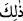

bir dâvetin emredilmesinin sebebi yine odur.
Âyetteki
/zâlike kelimesinin işâret ettiği nokta, peygamberlere tavsiye edilen, doğru
tutulması emredilen ve ayrılığa düşmenin yasaklandığı şeyler değildir. Böyle
zannedilerek burada konunun tekrar edildiği vehmine kapılmamak gerekir. Burada hevâ
ve bid’at ehlinin 72 fırkaya bölünmüş olduklarına ve bunların gittikleri yolu iptal etmek
üzere sırat-ı müstakîme, yani sünnet-i seniyye yoluna dâvet olunduklarına işâret
edilmektedir.
Hadis-i şerifte şöyle rivâyet edilmiştir: “Kim bid’at sahibini, sahip olduğu bozuk
inanç, kötü söz ve yanlış amelden sert bir dille men ederse, Allah o kimsenin kalbini
eman ve îman ile doldurur. Kim bir bid’at sahibini uyarıp onun bâtıl dâvâsını
aşağılarsa Allah Teâlâ o kimseye en büyük korku gününde eman verir. O gün,
insanların cehenneme sevk edildiği gündür.”[77]
İbn Semmâk şöyle demiştir: “Kıyâmet günü iki fırkaya ayrılma ve bu ikisinden
hangisi içinde bulunma korkusu, âriflerin kalplerini kesip parçalamıştır.”
Bezzâzî’ye’de şöyle anlatılmaktadır: Rivâyet edildiğine göre İbnü’l-Mübârek rüyâda
mânâ âleminde görülüp kendisine:
“–Rabbin sana ne muâmele yaptı?” diye soruldu. O da:
“–Bir gün bir bid’at sâhibine lutuf ve merhamet nazarıyla baktığım için Allah beni
otuz yıl tutuklayıp sitem etti ve «Sen din konusunda bana düşman olana düşman
olmadın» dedi.”
Durum böyle olunca, kendilerine bunca öğüt ve nasihat verildikten sonra bu zâlimlerle
oturanların hâli nice olur.
O halde “sen de” o dinde ve dine dâvette “emrolunduğun” ve Allah tarafından sana
vahyolunduğu “gibi dosdoğru ol.” Bu emirden maksad, dinde ve dine dâvette devam ve
sebattır. Çünkü Peygamberimiz (s.a.) bu mânâda zaten müstakimdir. Hadis-i şerifte:
“Beni Hûd ve benzeri sûreler ihtiyarlattı” buyrulmuştur. Peygamber (s.a.)’e “niçin
böyle ya Rasulallah?” diye sorulunca Peygamberimiz (s.a.): “Çünkü o sûrede
“Emrolunduğun gibi dosdoğru ol» (Hûd, 11/112) âyeti vardır” buyurmuştur.[78]
Peygamber (s.a.)’e yapılan bu hitap, onun Allah’ın emrini yerine getirmedeki
kuvvetine göredir. Bu sebeple o (s.a.), bu husustaki zayıflıkları sebebiyle ümmetine:
“Sizler de istikamet üzere olunuz. Ancak benim emrolunduğum şekilde istikamet üzere
olmaya güç yetiremezsiniz” buyurmuştur. Bu bakımdan gerçek mânâda istikamete ancak
peygamberler ve evliyânın büyükleri muktedir olurlar. Çünkü gerçek istikamet;
alışkanlık hâline getirilmiş bilindik işlerden uzaklaşmak, formalite protokol ve
âdetlerden sıyırılarak Hakk’ın huzurunda sadâkatle elpençe divan durmaktır.
Kâşifi şöyle demiştir: Tıbyân’da belirtildiğine göre Velîd b. Muğîre Peygamber
(s.a.)’e: “Dininden ve dâvândan dön, malımın yarısını sana vereceğim” dedi. Şeybe de:
“Atalarının dînine yeniden dönersen kızımı sana nikâhlayacağım” diye vaad etti. Bunun
üzerine; “Kendi dâvetinde sebat göster, dînin ve milletin üzere mustakîm ol” anlamında